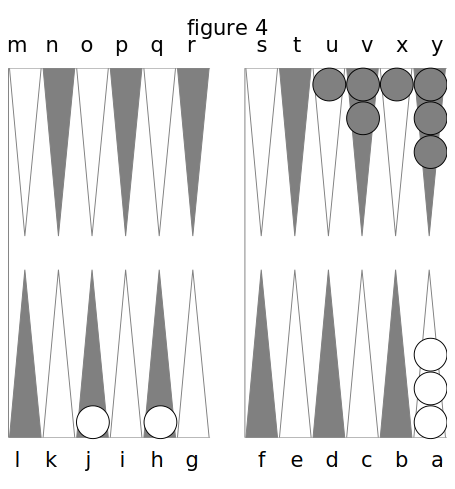
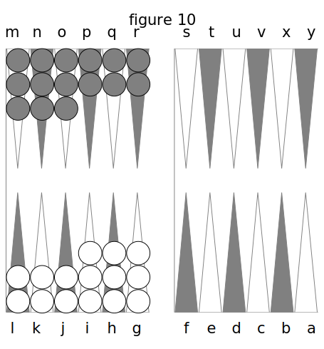
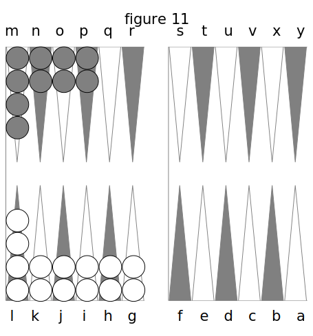

TROISIÈME PARTIE. DES PRINCIPES QUI CONSTITUENT L’ART DE BIEN JOUER.
Le Trictrac est un jeu où le hasard joue un grand rôle ; on pourrait même dire qu’il en fait le fond. Cependant la marche de ce jeu est si compliquée, et les chances de ce hasard sont si multipliées, que la théorie en est longue est difficile à saisir.
Toute la science du Trictrac roule sur la connaissance parfaite des probabilités auxquelles donnent lieu les trente-six chances des dés ; connaissance assez étendue, qui ne peut être appliquée à la pratique que par des principes dont l’exécution soit sûre et invariable.
On peut pourtant, perdre encore, même en jouant tout le jeu contre quelqu’un qui le joue très-mal. Mais, si cela arrive quelquefois, il est impossible que ce soit d’une durée bien prolongée : le joueur supérieur l’emporte à la longue. Est-il étonnant, au surplus, qu’il en soit ainsi dans un jeu dont la base est le hasard, tel que celui-ci ? Mais encore un coup ? un joueur habile corrige la fortune, et comme le dit Térence :
Ita vita est hominum quasi cùm ludas tesseris, si illud quod maxime opus est jactu, non cadit ; illud quod accidit id arte ut corrigas.
La vie des hommes est comme un jeu de dés : si la chance dont vous avez le plus besoin n’arrive pas, corrigez habilement celle qui est arrivée.
Le secret du Trictrac consiste donc à suivre la méthode de conduite la plus conforme aux probabilités; et c’est de cette méthode que je vais exposer les principaux erre mens. Je ne dirai pas qu’après avoir lu cet ouvrage, on puisse devenir aussi fort qu’il soit possible : la pratique constante et la grande habitude peuvent seules faire arriver à la perfection; mais au moins je donnerai des principes qui pourront guider ceux qui apprennent le jeu, et qu’ils appliqueront eux-mêmes dans toutes les positions.
Je vais donc, pour ainsi dire, donner la clé de ce jeu, clé que les forts joueurs d’aujourd’hui ont grand soin de cacher. Je me rappelle qu’étant dans une de ces sociétés où se réunissent un grand nombre d’hommes pour faire de grosses parties, un de ces joueurs qui ne jouent que pour gagner, et qui spéculent sur la faiblesse des uns et des autres, me tira à l’écart pour me faire des reproches de ce que j’avais, en regardant jouer au Trictrac, fait des observations au plus faible sur les fautes qu’il faisait, observations qui tendaient à lui donner les grandes notions du jeu. Il me trouvait bien imprudent d’éclairer ainsi un ignorant : il fallait, si je l’en croyais, le laisser s’instruire lui-même, à ses dépens, comme il avait fait, lui, jadis. Il n’y avait pas de raison, suivant lui, pour épargner ainsi à une mazett.c, c’est son expression, la longueur et les frais de l’apprentissage. Il ne servirait de rien d’avoir passé du temps et des veilles, de s’être absorbé dans les méditations pendant tant d’années, si cette mazéttc, avec des avis trop salutaires, arrivait en quinze jours de temps à la perfection ; enfin, que c’était nuire aux bons joueurs et aller contre l’intérêt commun, que de dévoiler ainsi les secrets du métier. Il me cita Fontenelle qui a dit, que lors même que sa main serait pleine de vérités, il ne l’ouvrirait pas, et il finit par ce vers :
Les sols sont ici-bas pour nos menus plaisirs.
Tout cela était dit d’un sérieux à faire mourir de rire, et je fus tenté de le prendre pour un fou.
Pourtant, je lui répondis en riant que je ne partageais pas cette opinion enfantée par l’égoïsme et la spéculation qui veut que l’on cache aux autres des vérités dont on veut fane 6eul son profit ; que je désirerais, au contraire, que tons les hommes en sussent autant les uns que les autres, afin que nul d’eux ne fût la dupe d’un plus rusé, et que pour moi, j’étais si philantropique de caractère, que je ne pouvais me défendre du penchant d’enseigner à mes semblables ce qu’ils ne savent pas. D’ailleurs, je le rassurai en lui faisant sentir que tous mes avis ne serviraient pas de grand-chose à la mazette qui n’aurait pas d’aptitude naturelle à devenir forte, qui n’aurait pas reçu du ciel l’influence secrète. Cette réponse le consola, et termina cet entretien comico-philosophico-burlesque.
Le plus grand obstacle qu’éprouvent les personnes qui n’ont pas l’habitude du jeu de Trictrac, est tout entier dans le coup d’œil. Il n’y a pas de jeu où il soit aussi difficile à saisir. Un novice, quand il a un certain nombre de dames abattues, ne sait plus laquelle jouer, et, faute de savoir à quoi se déterminer, prend souvent la dame qu’il ne doit pas prendre.
Il est certain pourtant qu’au Trictrac, comme aux Dames ou aux Echecs, il n’y a pas deux façons de bien jouer un coup. Que l’on ne croie donc pas que les grands joueurs ne soient pas d’accord entre eux sur la manière de jouer, de même que deux médecins sur une maladie. Le Trictrac est un peu moins conjectural que la médecine, et si deux joueurs, qui passent pour très-forts, ne sont pas du même avis sur un coup, vous pouvez croire hardiment que l’un des deux se trompe, ou ne mérite pas le renom de fort ; car, les réputations de joueurs ressemblent aux réputations de littérateurs, et à bien d’autres : il en est beaucoup de mal fondées.
C’est donc un axiome essentiel dont il importe que je démontre la vérité, et que je dois établir ici, avant d’entrer en matière : qu’il n’y a pas deux façons de bien jouer un coup au Trictrac ; que rien ne doit y être donné au caprice, et que, pour le bien jouer, il faut suivre invariablement les principes de conduite qui résultent de la théorie du calcul des probabilités particulières a ce jeu.
Certes, ce calcul de probabilités est plus étendu qu’on ne pense, et il y a un si grand nombre de positions au Trictrac, que celui qui prétendrait que ce jeu n’est pas au-dessus du Domino ou du Réversis ; que même il n’est pas supérieur au Piquet, et qu’il ne vient pas directement après les Echecs et les Dames, se tromperait étrangement, et ne connaîtrait ni la conduite ni les finesses de ce jeu.
Je vais donc développer, par ordre numérique, successivement tous les principes du jeu, à-peu-près dans l’ordre des positions auxquelles ils appartiennent; et je mettrai sans doute, par là, les étudians à même de se faire au coup- d’œil qu’il exige, en les familiarisant avec ses finesses.
I. Principes généraux sur le casement.

- Lorsque vous jouez le premier coup de clé, mettez tout-à-bas (je sais que les anciens auteurs donnent, comme un principe incontestable, de jouer tout d’une au premier coup, quand on amène un point au-dessus de 6 ; mais c’est une faute grave, car, en jouant ainsi, on s’ôte tout à-la-fois le moyen de faire un petit Jan ou un Jan de six tables, l’on a une dame de moins à bas, et l’on n’est pas sur de couvrir de sitôt celle qui est avancée).
- Lorsque vous jouez le second coup, si vous amenez le point de 9 ou de 10, jouez tout d’une, si votre adversaire n’a encore des dames que dans son petit, Jan, afin que de cette dame ainsi avancée vous puissiez le battre plus vite et l’empêcher de faire son petit Jan ou d’en profiter.
- La dixième case qui se fait sur la flèche K ; fig. 1, est bonne à faire dans les premiers coups, parce qu’elle empêche souvent votre adversaire de faire son petit Jan, l’oblige à se couvrir, trouble singulièrement son jeu, et l’empêche aussi de s’étendre et de faire des demi-cases qui pourraient lui coûter un ou plusieurs trous ; elle est bonne également lorsque votre adversaire a son coin, et que vous n’avez pas le vôtre. Faites-la donc la première dans ce cas, et comme case d’observation, ainsi qu’on la nomme (on l’appelle vulgairement la Travanais, parce que le marquis de Travanais, qui était fort au Trictrac, fut le premier qui s’avisa, malgré l’ancien préjugé, de la faire de préférence dans beaucoup de cas, et qu’elle lui fît gagner beaucoup d’argent. Les anciens avaient encore pour principe de ne la faire que la dernière ; ils l’appelaient la case de l'écolier ; mais ils en exagéraient les inconvénients). Il ne faut pas appauvrir votre jeu pour cela, et lorsque vous êtes le plus avancé, évitez-la au contraire, parce qu’elle étrangle le jeu, le serre, rend les quines pernicieux à jouer, augmente les chances qui vous font battre votre adversaire à faux, vous donne une mauvaise position, et vous mène à la perte d’une partie. C’est la case la plus avantageuse à la fois et la plus dangereuse.
- La case F, dite le coin bourgeois, est essentielle à faire lorsque votre adversaire a son coin, parce que vous vous donnez par là des 6 pour faire le vôtre, lesquels autrement gâteraient votre jeu ; mais quand vous avez votre coin fait, il faut éviter de la surcharger de dames, parce qu’elle appauvrit et serre le jeu.
- La case en H est appelée la case du diable, parce qu’elle est très-difficile à faire à la fin : il faut donc chercher à la faire de préférence, à moins qu’on n’ait assez de dames étalées dans son petit Jan pour la faire à volonté.
- Si, après les deux premières dames jouées, vous amenez un gros dé, passez ces deux dames dans votre grand Jan, soit de manière a faire des demi-cases, si votre adversaire est éloigné, soit à faire une case, s’il est trop proche. La raison en est, que vous vous mettez, en jouant ainsi, à même, ou de Lattre les deux coins et les dames découvertes de votre adversaire, ou de prendre votre coin le premier.
-
Si vous passez, au second coup, les deux premières dames jouées dans le grand Jan, jouez-les de manière à ce qu’il y ait une ou plusieurs flèches de distance entre elles : il y a plus d’avantage ainsi, qu’en les plaçant sans intervalle l’une à côté de l’autre. 
En effet, les deux dames en H et J, fig. 4, ont le 5 et 3 et le 4 et 2, pour battre les deux coins. Mais si elles étaient en I et J, elles n’auraient que le 4 et 2 et le terne ; donc, il y a un coup de plus dans la première position.
-
Si vous jouez les deux premiers coups avec deux dames seulement que vous passez dans le grand Jan, n’en jouez pas un troisième avec ces mêmes dames ; c’est perdre du temps et négliger l’occasion d’abattre du bois.
- Passez, le plus que vous pourrez, les dames de votre petit Jan dans le grand Jnn, surtout dans le commencement, afin de prendre promptement votre coin et de faire le plus de cases possibles; cependant, il ne faut pas vous découvrir trop, ni vous faire battre trop facilement, surtout si votre adversaire à 4,6,8, ou 10 points.
- Le grand principe, inconnu des joueurs d’autrefois, et qui rend le jeu moderne si supérieur au jeu ancien, c’est de s’avancer et de s’étendre. Avancez-vous, étendez-vous tant que vous pourrez : il n’y a pas de jeu plus dangereux que celui qui s’avance, qui s’avance continuellement. Faites beaucoup de demi-cases et de revirades (la revirade consiste à faire une case sur une flèche vide avec des dames prises sur des cases déjà faites, et qui laissent une ou deux dames à découvert. Les anciens étaient si timides, qu’ils osaient rarement les faire. Un joueur du vieux temps se serait ou perdu s’il en eût hasardé une, ou fait une demi-case) ; ce système, inconnu aux anciens, est le plus avantageux. Un jeu serré et timide est le plus mauvais de tous les jeux ; c’est là un des plus grands secrets du Trictrac.
- Ne craignez donc point de vous faire battre! Ce sont les lâches et les peureux qui, au Trictrac comme à la guerre, sont battus. Il faut de l’audace dans l’un comme dans l’autre. Un joueur hardi déconcerte toujours un joueur pusillanime ; trop de prudence fait perdre.
- Cependant, il ne faut pas abuser de ces dernières maximes ; d’abord, avant que d’avancer son jeu, il faut abattre du bois, tant dans le grand que dans le petit Jan : ce serait une sottise que de faire des cases avec des cases : ce serait vivre de soi-même, si l’on peut s’exprimer ainsi ; on ne peut pas se faire un beau jeu si l’on n’a pas de bois, et il ne faut pas se presser follement d’avancer son jeu sans avoir rien pour l’alimenter (On ferait la même faute qu'un général qui enverrait toujours un corps détaché à une distance de son armée principale trop grande pour pouvoir en être soutenu. Jeu de Trictrac). Abattre du bois, voilà donc encore un des grands principes du Trictrac.
- Mais quand on a assez de bois d’abattu, il faut s’avancer de nouveau. Si vous mettez trop de dames à bas, vous useriez, vous raccourciriez votre jeu.
- De plus, il ne faut ni s’avancer, ni s’étendre sans nécessité. Il ne faut pas s’exposer à se faire battre par un trop grand nombre de coups, ni donner un trou mal-à-propos, ni perdre le fruit d’une belle position. La prudence doit dans le jeu, comme dans la vie humaine, tempérer la hardiesse. D’ailleurs, la hardiesse même, comme la prudence, est soumise au calcul : c’est par calcul qu’il faut avancer.
- Le plus grand secret du Trictrac, celui qui est inconnu à presque tous les joueurs, même du temps actuel, c’est l’arithmétique dont j’ai ci-devant développé la théorie. On peut bien jouer, sans doute, sans la connaître; mais on joue encore mieux quand on la connaît.
- Pour apprendre le fond du jeu de Trictrac, il faut donc, aussitôt qu’on en sait la marcheuse pénétrer de mon arithmétique, et l’appliquer à tous les coups. Je garantis au joueur qui emploira ce moyen, qu’il fera des progrès quatre fois plus rapides que d’autres, qui le joueront longtemps avant de raisonner leurs coups.
- Donc, pour bien jouer après cinq ou six leçons, il faut s’armer de l’arithmétique du jeu, et prendre pour maxime perpétuelle d’examiner à chaque instant combien on a de coups pour, et combien contre, d’après la connaissance des trente-six chances du dé (il n’y a rien de plus ridicule que cette opinion répandue dans le vulgaire des joueurs de Trictrac, que ceux qui calculent ce jeu le jouent moins bien que les autres. Cela est aussi absurde que si l’on disait qu’on peut relever une côte ou arpenter un pays sans avoir de notion de la géométrie. Comment se passer du calcul dans un jeu qui n’est fondé que sur le calcul ?).
- Il ne faut point vous amuser à retenir les dés passés que vous avez amenés et qu’a amenés votre joueur, ni baser sur ce souvenir votre manière de jouer. Par exemple, s’il a amené six fois de suite des 6, six fois des 5, etc., ne lui donnez point à battre par les 6 et les 5, dans l’idée qu’il n’en amènera plus. Toutes les lois du calcul des probabilités prouvent qu’il n’y a pas de raison pour qu’une quantité qui a paru vingt fois de suite ne reparaisse encore une vingt-unièine. Elle n’est pas plus épuisée au vingtième qu’au premier coup (c’est en quoi consiste la folie des misérables qui ont le malheur de jouer des jeux monstrueux, tels que la Roulette et le Trente-Un. Ils sont toujours à épier les sorties des couleurs, s’imaginant follement qu’ils vont gagner en jouant sur la noire, après avoir vu passer six ou huit coups à la rouge. Ils fabriquent des martingales infaillibles qu’ils jouent avec une précision risible, et dont le succès est si immanquable, qu’il va les conduire tout droit...... à la rivière).
- On ne doit essayer un petit Jan que lorsqu’on amène des petits dés, c’est-à-dire, des as, des 2 et des 3. Si l’on répète les 3, les 4 et les 5, il faut passer vite dans le grand Jan.
-
Lorsqu’on essaye un petit Jan, il ne faut pas se presser de faire les dernières cases D, E, F, fig. 1.
Jouez les as et les 2 que vous amenez comme ils sont venus, parce que vous pouvez, avec d’autres as et d’autres 2, faire les 1eres cases B et C, car s’il vous venait ensuite des 3 et des 4, ce serait des dames perdues pour votre petit Jan.
-
Le Jan de six tables ne s’essaye que dans le seul cas où l’on a commencé par de petits dés, car si l’on a commencé par des gros, il est mieux de jouer dans le grand Jan pour avancer.
II. Des diverses positions du jeu.
Il y a au Trictrac, comme aux échecs et aux dames, une multitude incalculable de positions, c’est-à-dire, de configurations de dames casées sur les flèches, d’après les nombres amenés par les dés* Il serait donc impossible des les énumérer et de les analyser. Je vais simplement faire des observations générales sur toutes, et des observations particulières sur les principales, sur celles qui se reproduisent le plus souvent.
- Pour bien jouer le Trictrac, il vous faut avoir sans cesse égard d’abord à votre position, ensuite à celle de votre adversaire, les comparer ensemble et vous comporter en conséquence. Je ne peux donc pas yous dire : jouez ici de telle ou telle façon dans tous les cas, parce que telle façon, qui est bonne dans un cas, est mauvaise dans un autre. C’est donc à vous d’apprécier l’état du jeu de part et d’autre, et de vous livrer aux considérations qui résultent d’un pareil examen. D’ailleurs, la manière de jouer dépend de la circonstance où l’on se trouve, du plus ou moins de points qu’a l’adversaire, et de l’état plus ou moins avancé ou retardé de son jeu. { ^ start=22 }
- En conséquence, vous ne devez pas jouer pour le dernier trou d’une partie comme pour le premier.
- Il ne faut pas craindre de perdre un trou ou deux lorsqu’il s’agit d’éviter une mauvaise position ou d’en prendre une bonne.
- Il faut, pour essayer une position, que le dé se déclare d’une manière analogue, et il faut y renoncer dès que le dé la contrarie.
- Il faut éviter surtout lorsqu’on n’a ni le coin bourgeois, ni le coin de repos, et que l’adversaire a le sien, d’empiler sur la case du 6 en R, fig. 19, parce que l’on a à craindre la répétition des 6.
-
Evitez d’avoir une position telle qu’outre votre coin, vous ayez la dixième, la huitième et la septième cases faites, ou les cases en H, I, K, fig. 21., lorsque vous n’avez pas de bois d’abattu, ou que vous avez des dames sur la cinquième case en F.
Le moyen, c’est de ne point faire la case dixième en K, si elle ne l’était point dès le commencement. Ce serait bien pis si vous aviez des dames en surcharge sur la case du 6, ou sur la case du diable, comme dans le jeu opposé de la même fig. (on appelle cela un jeu en Arbalète). Alors vous êtes exposé à l'enfilade (une enfilade est une série de mauvais dés résultant d'une mauvaise position qui, vous mettant dans l’impossibilité de jouer vos dames et vous forçant à relever, laisse votre adversaire prendre une quantité de trous. Alors on est enfilé. Cette expression a passé dans le monde et dans le style familier).
-
Evitez la position telle qu’ayant votre coin vous ayez les sixième, huitième et neuvième cases faites, ou les cases en J, I et G, fig. 22, et point de bois à bas, ou seulement sur la troisième case en D;
car si vous amenez des 3 et des 6 et 3 dans cette position, vous courrez risque de perdre votre jeu, et d’être enfilé. En effet, ayant le coin et la case en J faits, vous avez le quart des nombres produits par les dés occupés; de J en G encore un autre quart; de G en D, le troisième quart, et de D au talon le quatrième quart; ce qui partage les deux régions du Trictrac de 3 en 6, de 6 en 9, et 9 en 12; or, comme ces quantités sont diviseurs communs par quart des trente-six chances, elles viennent le plus souvent; donc on a contre soi successivement un quart des coups à chaque fois consécutive qu’on amène des 3 ou des 6, ou des 6 et 3 (Le 6 et 3 est appelé, par sobriquet, 6 et 3 l'enfileur, à cause du mauvais effet qn'il produit dans le jeu).
-
Encore un des grands secrets du jeu, c’est de faire des sacrifices pour sortir d’une mauvaise position, et de préférer perdre plusieurs trous plutôt que de s’exposer à perdre la partie. Ce qui caractérise un joueur inhabile, c’est de défendre avec entêtement un trou au commencement ou au milieu d’une partie.
- Donc il vaut mieux, pour prévenir un plus grand mal, mettre plusieurs dames dedans, c’est-à-dire, à découvert dans le grand Jan : par là on risque moins de serrer son jeu, ou d’être enfilé avec perte de 6, 8, 12, 20 ou 30 points.
- Lorsque vous amenez un sonnez, un 6 et 5, un quine, ou tout autre gros dé, et que vous avez déjà une de ces mauvaises positions dont je viens de parler, ou quelqu’autre pire, il faut, s’il y a ouverture dans le jeu de l’adversaire, passer une dame dans votre petit Jan, plutôt que de remonter en surcharge dans votre grand Jan celles qui sont encore dans votre petit Jan, et qui sont votre seule ressource.
- Lorsque vous cherchez à faire votre plein, dans le grand Jan, il faut vous hâter de mettre dedans le premier, on pour mieux dire, de placer une dame sur la flèche vide qui vous reste, afin de remplir le premier, à moins que votre adversaire, ayant des dés directs pour battre cette dame, n’ait déjà 8 ou 10 points.
- Lors même que votre adversaire aurait 8 ou 10 points,il faudrait encore mettre dedans, au risque de perdre le trou, si son jeu était long, et que le vôtre fût court et usé. Un coup de retard pourrait vous faire perdre la partie.
- Lors encore que votre adversaire aurait mis lui-même dedans, et, qui plus est, aurait fait son plein, ce serait encore votre jeu de mettre dedans pour le forcer à s’en aller, après avoir pris le trou.
- Lorsque vous avez mis une dame dedans par l’un des deux dés que vous avez amenés, et qu’il vous reste à en jouer une autre, vous l’abattez du talon, ou vous l’avancez d’une flèche sur l’aptre, de maniéré à vous donner le plus de moyens possible de remplir, en vous servant de la méthode que j’ai indiquée chap. 3,4 et 5 de l’Arithmétique. 11 n’est pas indifférent de choisir, entre plusieurs manières de jouer qui se présentent, celle qui vous donne le plus de moyens de remplir. Ainsi,vous ferez mieux, par exemple, de jouer de manière à avoir les 6, les 4 et 2, qui donnent trente-trois coups pour remplir que les 6, les 4 et les as qui n’en donnent que vingt-neuf.
- Ce que je viens de dire est subordonne aux circonstances, aux points dont vous avez besoin. S’il ne vous faut que 4 points, jouez de manière à avoir le plus grand nombre de moyens de remplir d’une seule façon ; s’il vous faut 8 points, alors il vaut mieux Vous ôter des moyens de remplir d’une façon pour augmenter ceux qui font remplir de deux façons. Ainsi, dans l’exemple précédent, où 6,4 et ? donnent trente-trois moyens, et 6, 4 et as vingt-neuf seulement, il faut se donner6,4 et as de préférence, quoiqu’ils diminuent les moyens de remplir, si l’on a besoin de 8 points ; car, 6, 4 et as donnent douze moyens de remplir de deux façons, et 6, 4 et 2, sept seulement, ainsi que je l’ai démontré, chapitre 4 de la deuxième Partie (cela seul démontre la fausseté de ces sophistes ignorants, qui prétendent qu’on peut jouer bien sans connaître l'arithmétique ; car il est évident qu’avec le tact ou le coup-d’œil seul on ne peut pas discerner ce que je prouve ici. Sans doute les circonstances où il faut employer ces procédés arrivent rarement; mais il suffit d’une fois, de temps à autre, pour faire perdre celui qui les ignore totalement. Il en est de cela comme de cette vérité, dont ceux qui ne connaissent pas la géométrie ne se doutent pas : qu’entre deux surfaces planes, celles dont les côtés sont doubles de l’autre a une superficie quadruple). Donc, puisqu’on n’aurait pas atteint son but en multipliant les moyens pour 4 points, il faut prendre de préférence la manière qui multiplie les moyens pour 8. 37. Lorsque votre adversaire n’a pas son coin et que votre jeu commence à s’user, pour éviter la mauvaise position où vous seriez s’il venait a le prendre, jouez, si le dé le permet, une dame en surcase sur votre coin, afin de battre le sien par les as et de prendre plus vite le trou.
- Une des premières finesses du Trictrac, consiste a se faire battre à faux. C’est une attention qu’il faut avoir en casant et abattant du bois, et lorsqu’ayant fait le plein du grand Jan on a besoin de points pour arriver au trou.
- Il faut pourtant éviter de vous faire battre a faux lorsque vous avez 8 ou 10 points, car, vous vous feriez renvoyer, c’est-à-dire, qu’on Vous forcerait de prendre le trou -, alors, vous ne seriez plus maître du jeu, et vous ne pourriez plus vous en aller. Evitez donc de recevoir le trou, afin d’être plus à même de le reprendre.
- Si vous n’avez pas votre coin, et que votre adversaire ait le sien, votre principale ressource doit être d’abord d’avancer tant que vous pouvez en revirant des cases supérieures sur les inférieures ; ensuite de vous faire battre à faux sur les cases en B, C et D, en fermant les passages dans votre grand Jan en G, H, I et J, fig. 23.
- Lorsque vous jouez une dame dans le petit Jan, ne vous embarrassez pas qu’elle puisse être battue à vrai, si elle peut l’être à faux, et qu’il vous importe moins de perdre un trou que d’en gagner un.
- A plus forte raison faut-il jouer une dame découverte dans votre petit Jan, lorsque, pour deux coups, par lesquels elle sera battue à vrai, il y en quatre ou cinq par lesquels elle sera battue à faux.
- Si vous êtes au dernier trou d’une partie, cherchez à vous faire battre à faux, ce qui vous donne gain plutôt, et ne craignez pas d’étendre votre jeu. Il ne faut pas jouer serré sur une fin de partie.
- Si, ayant votre plein fait, et ayant tenu, vous avez intérêt d’arriver plus vite aux 12 points, et qu’il vous faille 4 points, placez vous dans le petit Jan, de manière à ce que, par rapport aux cases vides de votre adversaire, vous ayez le plus de coups possible pour vous faire battre à faux sur une seule dame. Alors, c’est ordinairement sur la flèche proche de la case en F qu’il faut mettre une clame à découvert ; mais, s’il vous faut 8 ou 12 points, pour empêcher votre adversaire de prendre le trou avant vous, préférez de diminuer vos moyens d’être battu à faux d’une seule dame, pour en étaler plusieurs. Dans ce cas, il vaut mieux n’avoir, par exemple, que 9 coups qui Luttent 2 ou 3 dames à la fois, que quinze qui en battraient une seule, par la même raison que vous devez préférer les moyens qui remplissent de deux façons, à ceux qui ne remplissent que d’une seule.
- Lorsque votre adversaire ne joue plus que pour un ou deux trous, qu’il a 10 points, et que vous n’avez pas votre coin ; lorsqu’enfin votre partie est désespérée, n’hésitez pas à vous avancer, et sur-tout à vous faire Laure à faux, lors même que vous seriez exposé à être battu à vrai. En pareil cas, c’est une duperie de s’amuser à défendre une partie : il faut la regarder comme perdue et tout risquer; dans une situation désespérée, il faut employer des moyens désespérés. J’ai vu des joueurs faire leur coin ou mettre dedans, en faisant la revirade, de manière a laisser une dame découverte sur la flèche dixième en K, fig. 9, 16 ou 18, où il n’y avait absolument que bezet pour eux, et cela leur réussissait, leur adversaire amenant effectivement bezet, qui battait à faux cette dame en K.
-
Evitez de prendre cette position qui consiste à avoir, fig. 24, les cases C, E, G, I, K, faites ; c’est une des plus pernicieuses (on l'appelle vulgairement : Margot la mal fendue). Elle est bien diiférente de la position de l’autre jeu, même fig. qui est avantageuse (on appellee celle-ci : Margot la bien fendue).
-
Tâchez aussi de ne point faire de préférence les dernières cases en N, O, P, fig. 22, lors même que vous n’avez point le coin, à moins que vous n’ayez du bois en U et en V (eela s’appelle : brider son cheval par la queue); mais, si vous n’en avez pas, il ne faut que deux ou trois 5 et 4, quines ou carmes, pour vous faire perdre la partie la plus avancée.
-
Lorsque le jeu de votre adversaire est usé, et que ses trois dames surnuméraires s’empilent sur O, N, M, ne vous laissez (fig. 10) pas battre à faux dans votre petit Jan, et passez tout dans le grand, parce que, le 6 ne se jouant pas en pareille position, si vous en amenez, vous tiendrez plus longtemps.

-
Dans le cours du jeu, ayez toujours l’attention de ne pas mettre contre vous les dés carres. (on appelle ainsi tous ceux à nombre pairs). Au contraire, ayez toujours le soin d’en avoir à jouer de directs et de composés. La raison en est que les dés pointus (on appelle ainsi les dés impairs) se trouvent dans les carrés ait lieu que les carrés, ne se trouvent pas dans les pointus.
- D’où il suit qu’on doit toujours se donner les six de préférence, soit pour caser, soit pour remplir; mais quand on peut se donner des 6 et des 5, des pairs et des impairs, c’est encore mieux.
III. Sur les tenues, le Jan de retour et autres.
- La partie la plus difficile du Trictrac, c’est les tenues.. Voilà absolument l’écueil des joueurs faibles ou médiocres ; il y faut mettre tant de bon sens qu’on pourrait avancer, sans absurdité, qu’un homme qui a l’esprit faux ne pourra jamais bien jouer le Trictrac à cause des tenues. { ^ start=51 }
- Un grand principe au Trictrac est donc de considérer, lorsqu’on fait une tenue, s’il y a plus à perdre qu’à gagner ; et, pour cela, il faut examiner le jeu de son adversaire et le comparer au sien. Si votre adversaire a un jeu retardé, ne tenez point, à moins que vous ne jouiez pour un trou ou deux : rien n’est plus dangereux qu’un jeu retardé. Vous n’avez qu’à battre à faux votre adversaire et lui donner le trou, voilà votre jeu tout-à-fait usé, et il n’y a pas de raison pour qu’il ne prenne vingt trous de suite, puisque, lorsqu’il a encore le tiers de son bois dans son petit Jan, vous vous retroussez déjà sur J, K, L.
-
Donc, il faut pour tenir, avoir un jeu long, c’est à dire avoir des dames encore au talon, ou non loin; 21 points à jouer, voilà le nombre de rigueur pour motiver une tenue. Ainsi, on peut encore tenir lorsqu’on a ses trois dames excédantes en D, E, F, fig. 20 (on appelle cela, je ne sais pourquoi, la rôtie du major).

-
Cependant, il ne faut pas vous laisser séduire par ces 21 points, 1 orque le jeu de votre adversaire est arriéré, soit que vous jouiez pour un trou ou pour beaucoup : je le répète, rien n’est aussi à craindre qu’un jeu arriéré.
- Si vous avez une partie désespérée, c’est- à-dire, si vous n’avez qu’un trou, ou point, et que votre adversaire en ait dix ou onze, risquez une tenue, même avec moins de 21 points, pour peu que vous ayez une ou deux dames à faire battre à faux, et que son jeu soit avancé. La raison de cela est qu’il n’y a de ressource pour celui qui est en perte, que dans les fins de relevés, quand on est près d’un Jan de retour. C’est ordinairement lorsque les deux jeux sont dans cet état, qu’il survient le plus d’événemens avantageux. Le moindre désastre qu’éprouve votre adversaire, par l’arrivée d’un sonnez oit d’un quine, suffit pour lui faire perdre une partie.
- Pour faire une tenue à propos, il ne faut donc considérer que le nombre de points que vous avez à jouer et qu’a votre adversaire. Si vous avez quelque avantage sur lui, ne manquez pas d’en profiter.
- Ainsi, si dans le commencement d’un relevé vous avez plus de cases que lui, c’est encore un avantage ; mais si l’un a plus de cases et l’autre plus de bois, en même proportion, l’un compense l’autre, et il n’est pas nécessaire de tenir.
- Rarement on peut prendre plus de 12 points à un petit Jan, à moins qu’ayant amené des as et des 2, on n’ait encore de quoi tenir trois fois, ce qui suppose qu’on a 18 ou 20 points à jouer pour conserver, autrement il faut s’en aller.
- Il existe, à ce jeu, un vieil adage, qui dit qu'on ne fait jamais de faute à s’en aller. Cela est vrai jusqu’à un certain point; et, en effet, on perd plus par des tenues imprudentes, qu’en s’en allant par trop de prudence. Cependant, il est nuisible de s’en aller trop facilement; et le joueur timide perd à la longue autant que le joueur téméraire. Il faut donc que ce soit le calcul arithmétique du jeu qui guide votre jugement pour savoir si vous devez ou ne devez pas tenir. Jouer d’instinct ou de pressentiment, c’est jouer en petit joueur.
- Lorsqu’on a un marqué au Trictrac à écrire, ou, pour mieux dire, lorsqu’on est arrivé à six trous, il faut s’en aller, lors même qu’on pourrait en prendre quelques-uns de plus; car un trou ou deux, ou plus, n’ajoutent que quelques jetons en votre faveur, et vous pouvez perdre le marqué.
- Le marqué, c’est la principale chose à ce genre de partie, plutôt que le nombre de points.
- Lorsque votre adversaire n’a pas de trous, et que par conséquent il peut prendre le pavillon, gardez-vous de tenir sans avoir un jeu sûr; car, pour gagner un trou ou deux, vous courriez risque de l’enfilade, en petite, en grande, même en octuple bredouille.
- Ce qui rend le Trictrac à écrire plus difficile que l’autre, c’est que les tenues y sont plus dangereuses et mènent plus loin. Il n’est donc excusable de tenir, avec un jeu douteux, que lorsqu’on n’a point le pavillon à craindre, ou lorsqu’on l’a soi même et qu’on ne joue que pour un trou.
- En jouant le Trictrac à écrire, lorsque vous voulez savoir si vous devez tenir, examinez mûrement si vous avez plus à perdre qu’à gagner; si, par exemple, après être arrivé à six trous en bredouille, vous avez encore beau jeu pour tenter la grande bredouille, et que votre adversaire ait un jeu trop passé pour vous gagner le marqué, restez, parce que le pis qui puisse vous arriver, c’est de perdre le pavillon; mais en le perdant, vous ne perdez que moitié de ce que vous avez acquis; et, si vous arrivez au but, vous pouvez gagner le double. Donc, vous ne risquez qu’un contre deux; donc, c’est votre jeu de tenir.
- Dans toutes les positions du jeu, il faut toujours éviter de donner à votre adversaire les coups qu’il n’a pas. S’il né peut pas jouer les sixne les lui donnez pas à battre; s’il a mis dedans, et qti’il n’ait pour remplir que des dés pointus, évitez de lui en donner de quarrés à battre, car alors il n’aurait plus de chances contraires. D’ailleurs, c’est la quantité de points qu’a votre adversaire et sa position qui doivent vous guider.
- Lorsque votre adversaire amène de mauvais dés qui gâtent son jeu, gardez vous bien de lui rien laisser battre ou de mettre dedans, si cela peut lui donner des coups pour prendre le trou ; il le faut laisser se consumer lui-même et user son jeu.
- Le Jan de retour est ce qu’il y a au Trictrac déplus difficile à jouer. Dans les autres épisodes, tels que le petit et le grand Jan, le dé peut réparer une faute ou un coup qui n’est pas joué exactement; mais ici une faute demeure : il n’y a pas un coup d’indifférent.
- Ce qui est important au Jan de retour, c’est de passer le coin à propos. Si vous aspirez à une grande bredouille, passez-le le plus vile possible, lorsque vous n’avez plus que deux cases, ou que votre adversaire n’en a plus que deux lui-même ; à moins qu’il n’ait six ou huit points, auquel cas il ne faut pas vous presser de le passer, si ce n’est pour ne pas gâter votre jeu.
- Principe général au Jan de retour : si votre adversaire a plus de dames passées dans votre petit Jan que vous dans le sien, tâchez de lui interdire longtemps le passage, pour le forcer à perdre des dames dans voire petit Jan. Si au contraire, vous êtes plus avancé que lui, retroussez promptement, sans vous embarrasser de lui fermer un passage. Vous perdriez un temps précieux que vous devez employer à courir au plein.
-
Lorsque vous êtes prés de faire un Jan de retour, obstinez vous, aussi long-temps que possible, à tenir vos passages fermés en G, H, I, fig. 11, en ne relevant qu’une dame ou deux de ces cases ; parce que votre adversaire, ne pouvant pas passer, perd beaucoup de points, par les impuissances, sans compter ceux qu’il peut vous donner en yous battant à faux.

-
Si voire adversaire a, fig. 25, ses trois dames surnuméraires, ou seulement deux relevées sur M, et que vous ameniez un terne, un carmes, un 4 et 3, ou tout autre dé moyen, relevez votre case Ii sur les autres, afin que, s’il amène un 6, il ne puisse plus tenir par impuissance, et qu’il soit obligé de rompre en N.

C’est surtout lorsqu’il a relevé 2 ou 3 de ces cases que cette manière de jouer lui est pernicieuse, parce qu’il est souvent obligé de laisser, pendant deux ou trois coups, cette dame découverte qui lui fait perdre beaucoup de points, et l’empêche de garder ses trois cases M, N, O.
-
Il est un principe général pour le Jan de retour, c’est de tâcher de conserver vos trois dernières cases J, K, L, ou M, N, O. Elles sont le salut de votre jeu, s’il est retardé par de mauvais dés; elles seules peuvent vous sauver et détruire le jeu de votre adversaire.
- Une des grandes finesses du Trictrac, c’est que lorsque vous êtes dans un Jan de retour, et que votre adversaire a un jeu très-long, il ne faut pas vous amuser à lui tenir les passages * fermés en H et en I : il faut retrousser, autant que le dé le permet, et empiler sur J la neuvième case, parce que, cette case étant ainsi garnie, s’il vient des 2, on peut les jouer sans se rompre et sans diminuer par conséquent les trois cases qui sont votre dernière ressource.
- Lorsque votre adversaire vous ferme le passage chez lui par ses trois ou ses quatre cases M, N, O, ou M, N, O, P, il faut caser dans son petit Jan, pour le plein du Jau de retour, sur les flèches S, T, V, de préférence et principalement sur celle S ; car, si vous casez sur les dernières ex sur celle Y, vous raccourcissez votre jeu, et vous risquez de perdre une ou deux dames que vous êtes obligé de jouer par de gros dés.
- C’est le bon jeu, lorsque votre adversaire relève toutes ses cases, de vous étendre sur les flèches de son petit et de son grand Jan, afin d’avoir un jeu long et d’arriver le premier au plein. Alors vous tenez moins à faire les cases S, T, V, de son petit Jan.
- Lorsque vous arrivez à jouer sur la bande ou à sortir vos dames, ayez soin de jouer celles que vous ne pouvez sortir des cases les plus éloignées de la bande, afin de lever plutôt si vous amenez des dés moyens ou petits dans les coups suivans.
Voilà, je crois, les principes les plus importans pour bien jouer le Trictrac, et ses finesses les plus subtiles. Je ne puis mieux les résumer qu’en répétant qu’il faut à chaque instant avoir égard à sa position et à celle de son adversaire, et que pour cela il faut s’aider de l’arithmétique du jeu dont tous les secrets se convergent dans celui-ci.